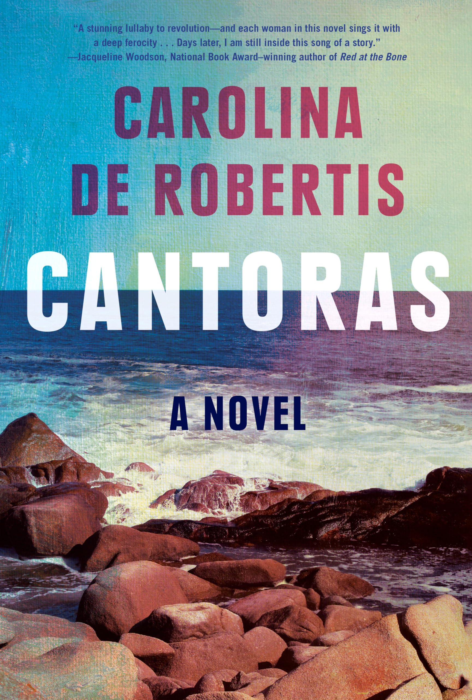

Who Are We?
Bean Soup and the Rat Bastards (BSRB) is a laid-back, monthly book club. We explore a wide range of genres so there's something for everyone. Join us for good books, thoughtful conversations, and yes-bean soup.

What Are We Reading Next?
Cantoras by Carolina de Robertis
"In defiance of the brutal military government that took power in Uruguay in the 1970s, and under which homosexuality is a dangerous transgression, five women miraculously find one another—and, together, an isolated cape that they claim as their own.
Over the next thirty-five years, they travel back and forth from this secret sanctuary, sometimes together, sometimes in pairs, with lovers in tow or alone. Throughout it all, they will be tested repeatedly—by their families, lovers, society, and one another—as they fight to live authentic lives.